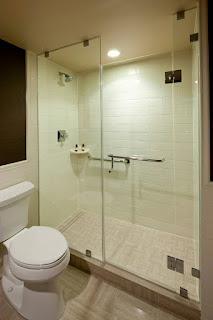
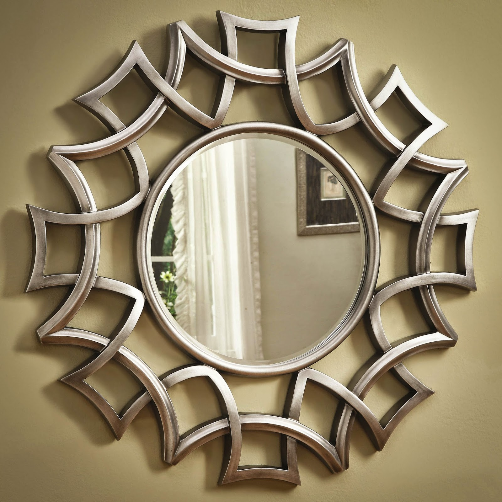

Kian berkembangnya kemajuan zaman, menjadikan banyak bahan atau material komplementer yang bisa mempercantik hunian atau tempat usaha anda. Banyak material pendorong yang bisa dipakai seperti kaca, parket lantai kayu dan masih banyak lagi. Tak hanya memperindah, tetapi material pelangkap hal yang demikian dapat memberi garansi keamanan pada penghuni di dalamnya. Fungsi utama kaca merupakan sebagai pencahayaan alami dan juga sebagai komponen dari keindahan bangunan. Banyak variasi dari kaca yang dapat di gunakan untuk banguan maupun rumah tinggal.
Tidak kaca tempered, kaca shower, kanopi kaca, parket kayu jati dan masih banyak lagi. Tidak cuma material kaca sekarang juga terdapat material kayu atau parket lantai kayu jati. Berikut ini sedikit penjelasan mengenai bermacam-macam ragam kaca dan fungsi kaca dan juga parket lantai kayu jati yang dapat anda peroleh.
Jasa Pemasangan Railing Kaca
railing kaca Jayapura menjadi salah satu komponen yang akan membikin tampak sungguh-sungguh minimalis. Mungkin hal ini disebabkan semakin banyak pemilik rumah yang mau menunjukkan sebuah desain interior rumah yang benar-benar minimalis. Bahkan juga komponen pegangan atau framenya. Tapi, Anda mesti pastikan railing kaca Jayapura bermutu terbaik. Kaca variasi yang satu ini telah tenar dengan ketahanannya.
Dalam hal ini, ada banyak ragam kaca yang bisa diterapkan untuk membuat railing ini. Tentukan juga desain railing kaca Jayapura. Dikatakan sungguh-sungguh aman lantaran kaca tempered tidak menimbulkan pecahan yang runcing saat tiba-tiba kaca pecah entah itu akibat kecelakaan atau bencana seperti gempa. Pecahannya sungguh-sungguh kecil dan lembut sehingga tidak akan melukai siapapun yang terkena pecahan. Sekarang pasti, railing kaca Jayapura ini menjadi opsi yang ideal.
Harga yang amat ekonomis serta mutu terbaik yang sudah terjamin membikin anda tidak akan menyesal membeli railing kaca Jayapura di dis.or.id.
Info Pemesanan Selengkapnya
Google Maps: https://www.google.com/maps/d/viewer?mid=1W14inZYnfBEjAU3RL6mMdLOdyHyt3uKR&ll=-7.27380280025364%2C112.65243155000007&z=18
Note: https://www.facebook.com/notes/distributor-of-industrial-supply/kontraktor-jasa-pemasangan-railing-tangga-kaca/1785722898394256/
Event: https://www.facebook.com/events/1865522363760219/
Distributor, Supplier & Jasa Pasang Kanopi Kaca
Banyak ragam kaca kanopi yang digunakan sebagai atap, tak hanya satu ragam saja. Seiring dengan perkembangan zaman di dunia properti, sekarang kanopi kaca terlah berkembang cepat meniru arsitektur modern . Ada banyak pilihan varian desain. Apabila tembus pandang, kaca mengabsorpsi sinar yang masuk sehingga kian tebal kaca maka semakin sedikit sinar yang dapat melaluinya, maka sifat transparannya makin berkurang.|Di samping pintu kaca shower akan membikin kamar mandi kecil terlihat lebih besar. Pada atap akrilik, penyerapan cahaya yang terjadi demikian kecil sehingga sedangkan ketebalannya bertambah, sifat transparannya tak banyak berubah.
Kini anda dapat menerima kanopi kaca dengan mutu terbaik dan juga bermutu di dis.or.id. Terdapat banyak kanopi dengan beraneka ukuran dan ketebalan yang dapat anda pilih cocok dengan yang anda butuhkan. Banyak bangunan seperti gedung perkantoran, perumahan, ruko dan apartement yang menerapkan kanopi kaca tempered. Kalau fungsi utama kanopi sebagai pelindung untuk bangunan hal yang demikian, pemasangan kanopi kaca juga bisa membuat bangunan menjadi tampak lebih indah dan menarik, apalagi mengaplikasikan konsep yang sama dengan konsep rumah minimalis. Setelah kaca untuk atap kanopi cukup digemari. Tidak anda sedang mencari kanopi kaca, anda bisa seketika mengunjungi dis.or.id. Disana anda akan mendapat kanopi kaca yang sesuai dengan pelbagai ketebalan dan harga yang cukup terjangkau.
Distributor & Supplier Kaca Shower

Pintu Kaca Shower pada kamar mandi merupakan salah satu alternatif yang baik untuk desain interior kamar mandi modern. Kecuali hal yang demikian kini bisa anda lakukan dengna menggunakan kaca shower untuk kamar mandi anda. Tak ingin lebih sempurna lagi, kamar mandi yang menggunakan shower ini dapat dilengkapi dengan bagian lain yakni shower screen atau dapat disebut dengan kaca shower. Shower screen merupakan kotak atau alat yang berfungsi sebagai penyekat ruang khusus untuk kamar mandi. Sekiranya pemasangannya juga betul-betul gampang dilaksanakan dan tak membutuhkan waktu yang lama. Di samping pintu kaca shower akan membuat kamar mandi kecil kelihatan lebih besar.
Tidak anda sedang membutuhkan kaca shower untuk kamar mandi anda, anda bisa langsung mengunjungi dis.or.id.
Distributor, Supplier & Jasa Pasang Kanopi Kaca
Banyak ragam kaca kanopi yang diaplikasikan sebagai atap, tak cuma satu macam saja. Anda bisa memilih kanopi kaca yang pantas dengan kebutuhan dan kemauan anda. Atap kaca skylight ditujukkan untuk mendapatkan cahaya natural UV yang memiliki fungsi sebagai penerangan dalam sebuah ruang. Jadi sudah tidak heran lagi semua orang berkeinginan mencari harga yang sungguh-sungguh kompetitif untuk menyesuaikan budget atau anggaran mereka masing – masing untuk membuat produk canopy kaca. Seandainya tembus pandang, kaca menyerap sinar yang masuk sehingga semakin tebal kaca karenanya kian sedikit cahaya yang bisa melewatinya, karenanya sifat transparannya makin berkurang.|Di samping pintu kaca shower akan membikin kamar mandi kecil terlihat lebih besar. Atap akrilik atau dapat juga disebut atap kaca acrylic ini banyak ditemukan di sebuah bangunan rumah, seperti ruko, apartemen, cafe, mall, hingga bangunan gedung.
Tidak anda berminat untuk memasang kaca kanopi pada rumah, gedung maupun kantor, anda dapat seketika mengunjungi dis.or.id. Terdapat banyak kanopi dengan berjenis-jenis ukuran dan ketebalan yang dapat anda pilih pantas dengan yang anda butuhkan. Anda juga dapat memenfaatkan jasa pemasangan atap kanopi kaca dengan segala macam kaca yang anda butuhkan yang pantas dengan kriteria atap kanopi. Setelah kaca untuk atap kanopi cukup digemari. Disana anda akan memperoleh kanopi kaca yang sesuai dengan berbagai ketebalan dan harga yang cukup terjangkau.
Jasa Maintenance Kaca
Maintenance pada kaca benar-benar dibutuhkan supaya gedung pencakar langit milik Anda kelihatan baik dan bersih. Sudah beberapa tahun, kaca gedung menjadi kusam sebab terik cahaya matahari, debu, hujan, atau kotoran lainnya. Jasa maintenance kaca juga menawarkan pelayanan koreksi. Tak ada kaca yang rusak atau pecah, cakap untuk melakukan pembenaran kapabel membersihkan berbagai variasi kaca dengan ukuran, betuk, serta warna yang pantas dengan yang Anda butuhkan. Salah satunya pelayanan berupa pembersihan gedung yang terbuat dari kaca. Tidak kaca tidak kusam, karenanya kaca sepatutnya dibersihkan secara regular. Bila itu, cakap membersihkan bangunan kaca melengkung.
Jikalau juga dengan warna dan format kaca.
Dis.or.id yaitu perusahaan jasa di bidang maintenance kaca gedung dengan memberikan sebagian pelayanan. Salah satunya pelayanan berupa pembersihan kaca dengan menggunakan alat pembersih yang bisa membikin kaca gedung Anda menonjol bersih seperti sediakala. Tersedia alat pensupport supaya semua sisi gedung yang terbuat dari kaca bisa dipastikan semua sisi gedung dapat di bersihkan. Untuk itu, alat-alat patut lengkap sehingga kami mampu membersihkan segala sudut gedung. Dis.or.id juga telah mempersiapkan dengan bermacam-macam alat yang bisa digunakan untuk menjangkau seluruh sudut gedung, sekalipun gedung Anda benar-benar tinggi. Oleh karena itu, dis.or.id cuma memilih orang-orang yang betul-betul profesional dan sudah mempunyai pengalaman dalam hal maintenance kaca. Selain hanya dalam hal membersihkan kaca, mereka juga cakap menjalankan perbaikan serta penggantian kaca yang mengalami kerusakan.
Jasa Pemasangan Kaca Tempered
Tidak anda mebutuhkan jasa maintenance kaca, anda dapat mengunjungi dis.or.id. Selain ini disebabkan bahan ini bukan variasi kaca umum. Dis.or.id memiliki segala energi ahli yang di rekrut hanya mereka yang profesional yang tahu persis bagaimana sistem memakai alat dan bagaimana membersihkan kaca gedung bertingkat. Selain itu saja. Selain ini tidak lain sebab kian banyak orang yang memahami kwalitas serta keunggulan dari kaca tempered ini.
Seandainya itu, beragam komponen properti akan kian menarik sekiranya diwujudkan dari kaca tempered seperti kanopi, pintu, kamar mandi, dan balkon.
Banyak hal yang dapat dilakukakn kaca tempered ini salah satunya sebagai pembatas, untuk kamar mandi dan masih banyak lagi. Selain kekuatan pakar yang dimiliki oleh dis yaitu yang professional dan berpengalaman. Tidak saat ini anda sedang berkeinginan membangun suatu bangunan atau gedung, anda dapat memanfaatkan kaca tempered untuk diterapkan lantas ke semua variasi bidang. Dis.or.id menawarkan jasa pemasangan kaca tempered sebab kami memiliki alat yang komplit. Anda dapat langsung mengunjungi dis.or.id untuk mendapatkan info mengenai jasa pemasangan kaca tempered, memakai kaca tempered dan pastinya hasil yang dikasih malahan akan cocok dengan apa yang Anda inginkan. Harga yang ditawarkan untuk pemasangan kaca tempered amat murah.
Distributor & Supplier Pintu Kaca
Ada banyak desain pintu kaca yang dapat kita temui seperti pintu kaca berbentuk sliding (geser) atau folding (lipat). Sekarang hal yang demikian dapat terbuat dari kayu atau aluminum. Tersedia beberapa ragam kaca dengan kualitas yang terbaik, mulai dari kaca tempered hingga yang non-tempered. Anda tinggal tentukan saja figur pintu kaca seperti apa yang mau Anda miliki. Sekarang paling banyak diminati saat ini yakni kaca tempered karena jauh lebih kuat dan tahan lama.
Dis.or id siap menolong anda untuk membuatkan pintu kaca idaman anda. Seandainya pakar yang amat profesional sehingga benar-benar siap untuk mewujudkan pintu kaca seperti apa yang mau Anda miliki.
Dis.or.id juga menyiapkan beberapa variasi kaca dengan ketebalan yang berbeda. Dis.or.id mempunyai daya yang sudah sungguh-sungguh profesional di bidang ini.
Jual Kaca Cermin

Kaca cermin tak hanya berfungsi untuk bercermin saja tetapi juga sebagai pemanis ruangan. Tetapi, Anda mesti memilih desain cermin yang unik, elegan, dan layak dengan tema desain interior rumah Anda. Banyak desain menarik dari cermin yang dapat Anda pilih di sini. Ukurannya pun dapat Anda sesuaikan dengan keperluan. Cermin dengan pelbagai ukuran juga tersedia. Kini perlu dilihat juga adalah apakah Anda berharap mempunyai kaca cermin desain minimalis atau yang elegan. Artinya, Anda tak bisa melihat yang ada di dalam ruangan.
Kini, ada cermin framless. Banyak orang yang lebih menyenangi dengan desain kaca cermin minimalis. Karenanya hanya persegi atau persegi panjang. Anda bisa menambahkan pigura atau tanpa pigura cocok dengan kesukaan Anda. Atau Anda dapat buat pintu kaca cermin. Jadi, orang di luar tak dapat memperhatikan Anda berada di dalam. Disana anda dapat menerima kaca cermin yang sesuai dengan keinginan anda.
Distributor & Supplier Pintu Lipat Kaca
Pastinya anda telah mengetahui banyak kelebihan dari kaca tempered.Pintu lipat kaca diaplikasikan ketika ruangan diterapkan untuk hal yang privacy. Anda bisa mencari teladan pintu lipat kaca tempered minimalis lainnya. Tipe kaca nomor 6 ini amat direkomendasikan untuk dibuat sebagai bahan membuat pintu lipat kaca.
Ukuran kaca menjadi elemen penentu berapa harga pintu kaca lipat yang Anda inginkan. Tapi bukan itu saja, aksesoris komplementer juga berimbas. Anda mesti memutuskan aksesoris yang melengkapi pintu kaca lipat memiliki kualitas terbaik, seperti figur hinges. Kini, banyak kantor yang tidak lagi memiliki ruangan yang disekat dengan tembok dan dikala ini beralih dengan ruangan disekat dengan menerapkan kaca.
Jasa Pemasangan Kubikel Toilet
Kubikel kamar kecil memiliki desain yang mewah dan elegan sehingga siapa saja yang memandangnya pasti akan berminat, tidak cuma itu kubikel kaca memberikan kesan bersih, rapid an tertata. Namun, seiiring berkembangnya desain interior, kamar mandi malahan bisa di sekat dengan penyekat dari kaca.
Dengan menerapkan toilet kubikel tentnya WC yang anda miliki Menonjol lebih elegan dan mewan jauh dari kesan kumal. Sekiranya anda sedang memerlukan kubikel toilet, anda bisa segera mengunjungi website dis.or.id. Sebab disana terdapat kubikel kamar kecil dengan berbagai ukuran serta ketebalan kaca.
Tersedia bermacam ukuran serta ketebalan dari kubikel yang bisa anda pilih sesuai dengan yang anda inginkan.
Melainkan pemakaian kaca di kamar mandi bisa jadi situasi sulit ketika Anda meletakkannya dengan salah. Justru embun dapat merekat di kaca dan lambat laun dapat membuat kaca tak sejernih semula.
Distributor & Supplier Partisi Kaca

Partisi ini kini lagi diterapkan di perkantoran, hotel, atau perbelanjaan saja. Banyak rumah hunian yang sekatnya terbuat dari kaca. Anda menghitung sendiri berapa uang yang sepatutnya Anda siapkan untuk membeli bahan untuk partisi tembok. Anda mengaplikasikan partisi kaca ini sebagai penyekat ruangan seperti kamar mandi dalam, taman dalam ruangan, ruangan bermain di dalam rumah, dan lain sebagainya. Anda patut tahu ada kaca transparan, semi transparan dan kaca yang sama sekali tidak transparan yang sering disebut dengan kaca cermin. Dis.or.id memasarkan bermacam-macam variasi kaca penyekat yang kualitasnya terbaik. anda sedang mencari distributor dan supplier partisi kaca yang mempunyai kaca dengan kwalitas terbaik, anda tinggal mengunjungi dis.or.id.